Abra o Studio e escolha BASEPLATE
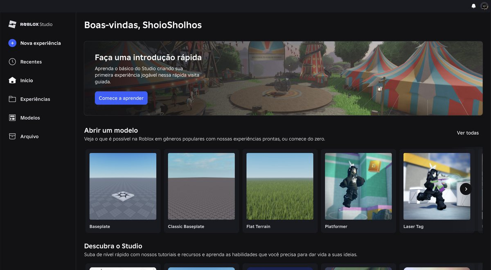
Foto da tela.
Projeto novo. Role a página para baixo até a fileira Abrir um modelo e clique no primeiro, o Baseplate.
- Abriu o projeto antigo
- Feche a aba e volte para o Início.
Vá para a aba MODELO
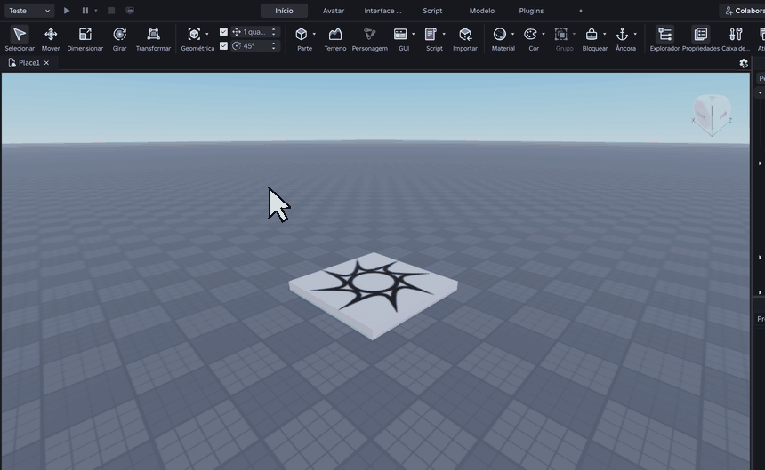
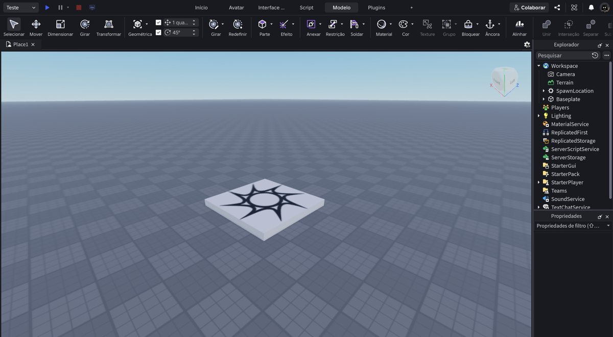
O clipe repete sozinho. Repare onde o cursor vai antes de clicar.
Clique em Modelo.
- Não acho
- Fica entre Script e Plugins.
Crie a peça
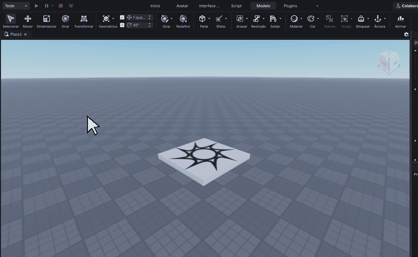
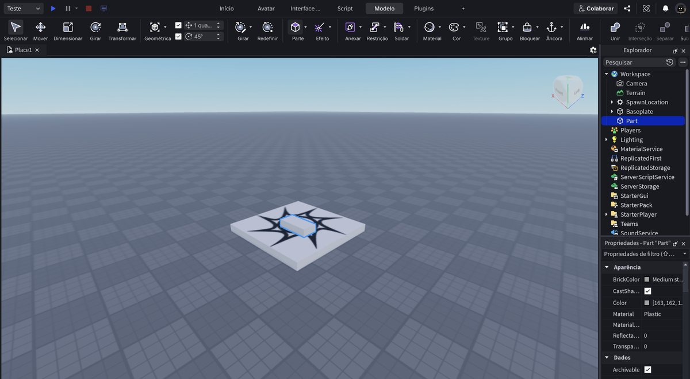
O clipe repete sozinho. Repare onde o cursor vai antes de clicar.
Clique no desenho do Parte. Depois clique no nome na lista, ponha o mouse no mundo 3D e aperte F, depois S algumas vezes.
- Nada aconteceu
- Você clicou na palavra, não no desenho.
Ancore
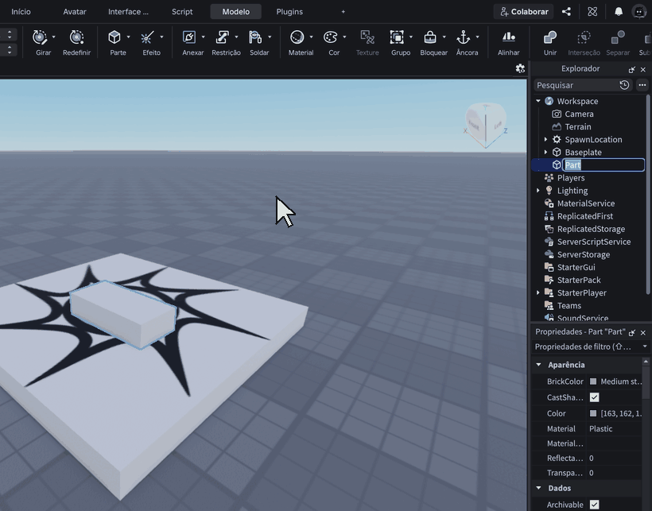
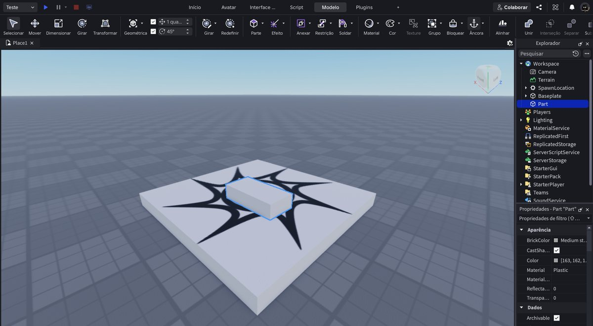
O clipe repete sozinho. Repare onde o cursor vai antes de clicar.
Clique em Âncora.
Hoje a âncora é ainda mais importante: a peça vai girar, e peça girando sem âncora sai voando.
- Não sei se ancorou
- Busque anchor nas Propriedades.
Faça uma barra comprida
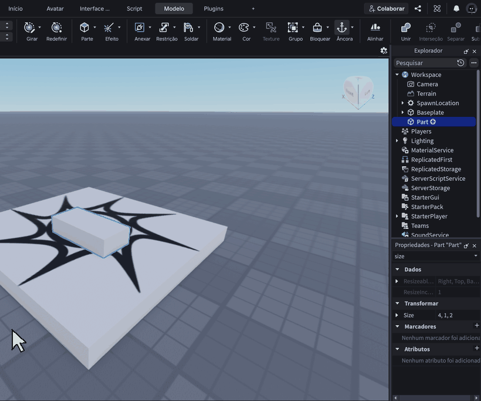
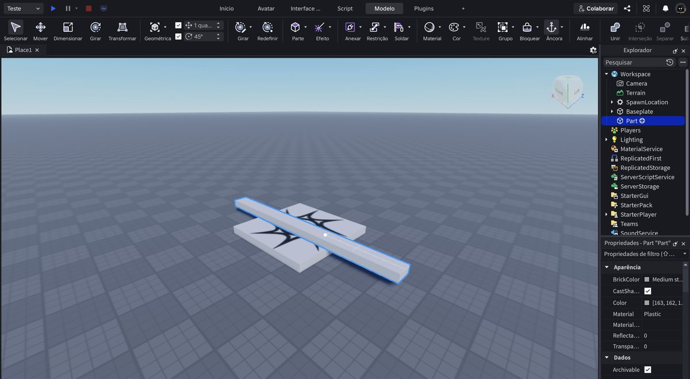
O clipe repete sozinho. Repare onde o cursor vai antes de clicar.
Busca das Propriedades → size → duplo clique no valor → Ctrl + A → 26, 1, 2 → Enter.
Depois busque position e ponha 0, 4, -14: a barra fica na altura da cintura, uns passos à frente de onde você nasce.
- Só mudou um número
- Faltou o Ctrl + A antes de escrever.
- A barra ficou no chão
- O número do meio é a altura. Use 0, 4, -14.
- Aparecem três linhas Position
- Use a primeira, embaixo de CFrame.
Pinte
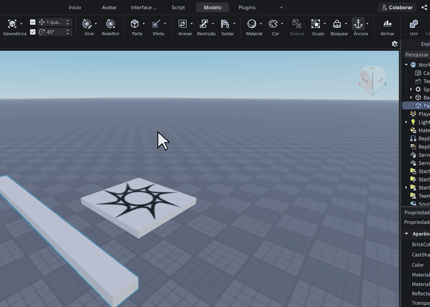
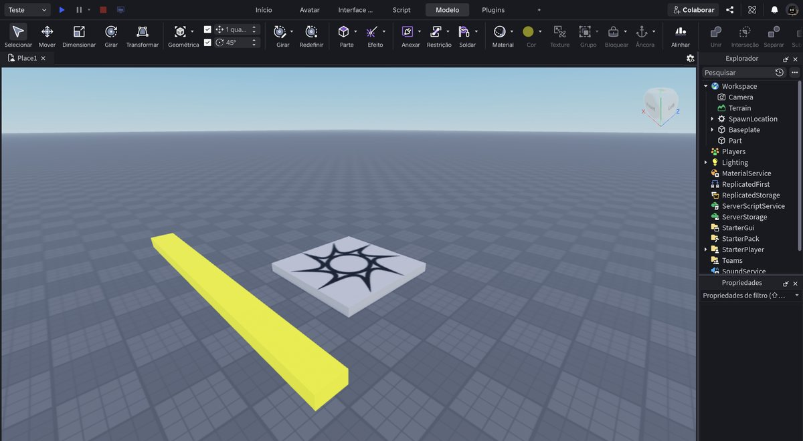
O clipe repete sozinho. Repare onde o cursor vai antes de clicar.
Setinha do Cor → amarelo → clique no círculo do botão Cor.
Amarelo é cor de aviso. Combina com uma coisa que vai te derrubar.
- Não pintou
- Falta o clique no círculo do botão Cor.
Chame de MARTELO
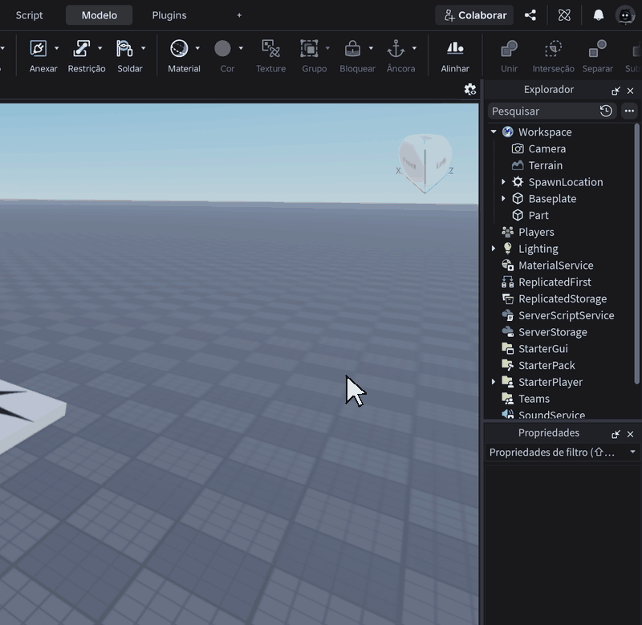
O clipe repete sozinho. Repare onde o cursor vai antes de clicar.
Botão direito na peça, na lista → Renomear → Martelo → Enter.
- Voltou o nome antigo
- Termine com Enter.
Ponha o Script dentro dele
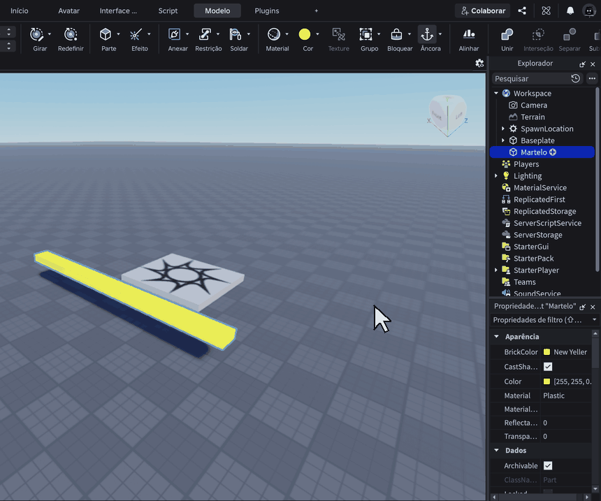
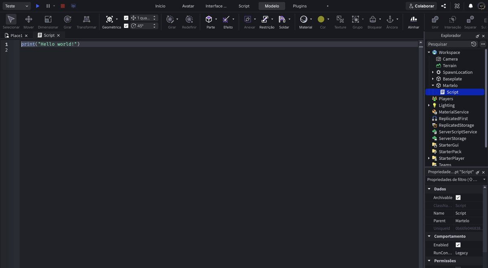
O clipe repete sozinho. Repare onde o cursor vai antes de clicar.
Clique em Martelo na lista, clique no + e escolha Script.
- Ficou fora
- Arraste-o por cima da palavra Martelo na lista.
Apague a linha pronta

Foto da tela.
Apague o print("Hello world!") inteiro.
- Sumiu a aba do script
- Duplo clique no Script na lista.
Escreva o laço
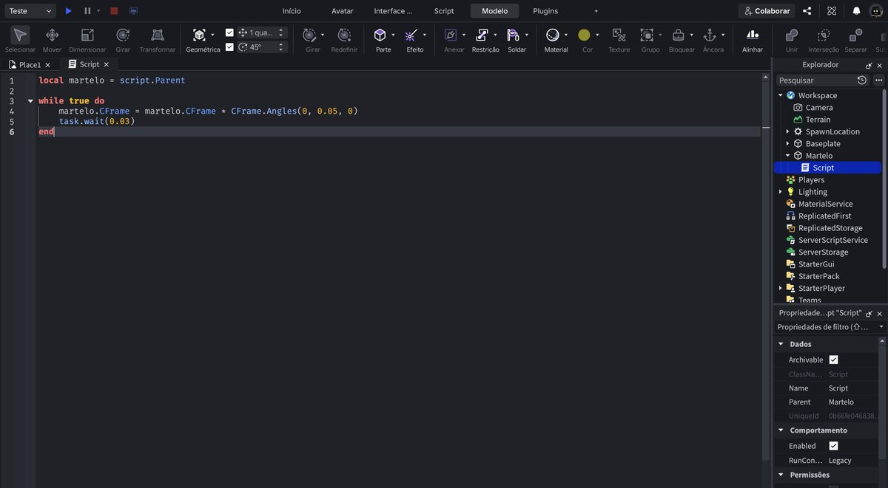
Foto da tela.
Seis linhas. As duas do meio entram para dentro — o editor faz isso sozinho.
- local martelo = script.Parent
- while true do
- martelo.CFrame = martelo.CFrame * CFrame.Angles(0, 0.05, 0)
- task.wait(0.03)
- end
Repare que este código não tem Touched. Ele não espera nada acontecer — ele age sozinho, o tempo todo.
Não digite as linhas em cinza. O editor escreve os end sozinho quando você aperta Enter. E não aperte Tab — ele já empurra as linhas para dentro.
- Sobraram end a mais
- Você digitou os que o editor já tinha escrito. Apague os extras até o código ficar igual ao da aula.
- Risco vermelho no fim
- Falta o end. Este laço termina com end sozinho, sem parêntese — diferente dos anteriores.
- Escrevi CFrame errado
- São dois maiúsculos: C e F. CFrame.Angles também.
- O editor completa sozinho
- Aperte Esc para dispensar a sugestão.
Entenda o laço
Foto da tela.
while true do … end — “enquanto for verdade, faça isto”. E true é sempre verdade. Então: faça isto para sempre.
Tudo que estiver entre o do e o end se repete sem parar.
martelo.CFrame = martelo.CFrame * CFrame.Angles(0, 0.05, 0) — “pegue onde a peça está e gire um tiquinho”. O 0.05 é o tamanho do tiquinho.
task.wait(0.03) — espere trinta milésimos de segundo antes de repetir.
- Qual muda a velocidade?
- Duas: aumentar o 0.05 gira mais por vez; diminuir o 0.03 repete mais vezes por segundo.
Por que o task.wait é obrigatório
Foto da tela.
Um laço while true sem espera roda milhões de vezes por segundo. O computador não dá conta e o Studio congela.
O task.wait é o que dá um respiro. É a linha mais importante do código de hoje, e é a que todo mundo esquece.
Não teste sem ela. Se travar, feche o Studio pelo gerenciador de tarefas e perca tudo o que não salvou.
- Já travou aqui
- Feche o Studio à força e abra de novo. Da próxima vez, salve antes de testar um laço.
Jogue
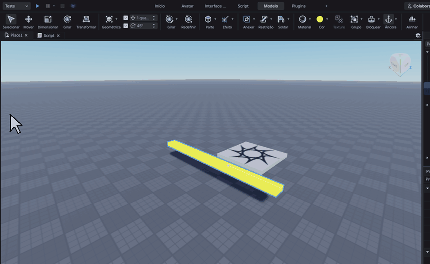
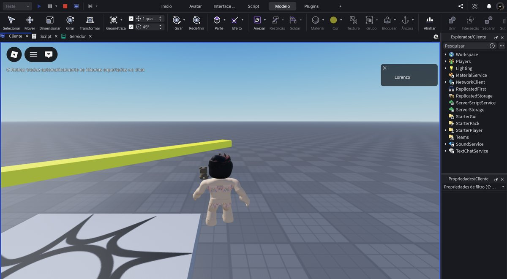
O clipe repete sozinho. Repare onde o cursor vai antes de clicar.
Volte para Place1 e aperte o ▶.
A barra amarela começa a girar sozinha, sem você fazer nada.
- Não gira
- Confira se o Script está dentro do Martelo e se não sobrou risco vermelho.
- O Studio travou
- Faltou o task.wait. Feche à força e refaça.
- A barra caiu
- Faltou ancorar.
Tome uma paulada
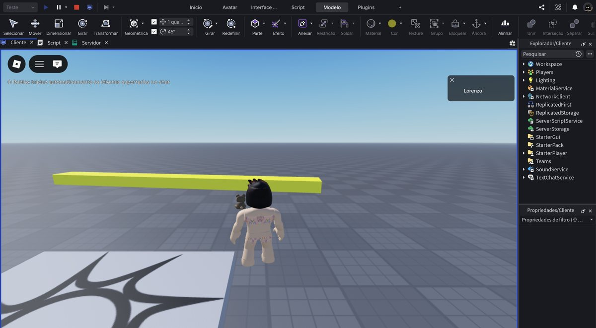
Foto da tela.
Ande até a barra e deixe ela te acertar.
Você é arremessado. Não precisou de nenhum código para isso: no Roblox, peça sólida que se mexe empurra o que estiver na frente.
- Ela atravessa meu boneco
- A peça está com CanCollide desligado. Marque a caixinha nas Propriedades.
- Ela passa por cima da minha cabeça
- Diminua a altura: position 0, 3, -14.
Mude a velocidade
Foto da tela.
Pare o jogo. Troque o 0.05 por 0.2 e jogue de novo.
Depois volte para 0.01. Sinta a diferença.
- Ficou rápido demais e não dá para passar
- É esse o ponto. Escolha um número que dê para atravessar com esforço.
- Mudei e nada aconteceu
- Você mudou com o jogo rodando. Pare, mude, jogue de novo.
Gire para o outro lado
Foto da tela.
Ponha um sinal de menos: CFrame.Angles(0, -0.05, 0).
O martelo passa a girar no sentido contrário.
- Não mudou nada
- Você esqueceu de parar e jogar de novo.
Faça o martelo subir e descer
Foto da tela.
Troque o meio do laço por estas duas linhas, uma embaixo da outra:
martelo.CFrame = martelo.CFrame * CFrame.Angles(0.05, 0, 0)
O primeiro número gira num eixo diferente. Experimente mudar qual dos três números não é zero e veja o que acontece com cada um.
- Todos parecem iguais
- Teste um de cada vez, com os outros dois em zero. A diferença fica clara.
- A peça sumiu
- Ela girou para um lugar estranho. Pare o jogo — ela volta ao normal.
Dois martelos
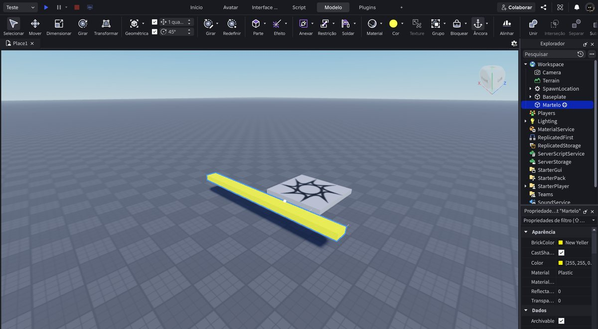
Foto da tela.
Com o jogo parado: botão direito no Martelo → Duplicar. Mude a position da cópia para 0, 4, -26.
A cópia já vem com o script dentro e gira sozinha. Agora são dois obstáculos em fila.
- Os dois giram igualzinho
- Mude o número de um deles para eles ficarem fora de sincronia. Fica bem mais difícil.
- A cópia não gira
- Você duplicou antes de pôr o script. Apague e duplique o que tem o Script dentro.
Salve
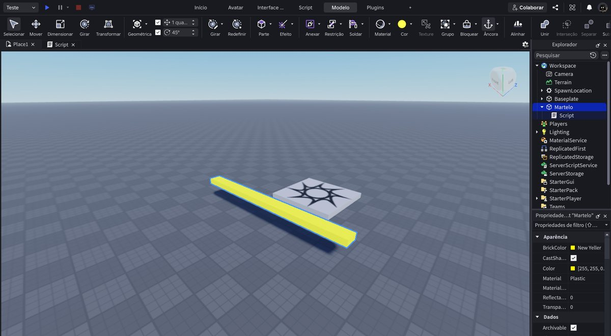
Foto da tela.
Ctrl + S → Salvar em arquivo → nome martelo.
Com laço no jogo, salve antes de testar. Sempre.
- Por que antes de testar?
- Porque laço mal escrito congela o Studio, e aí só fechando à força.